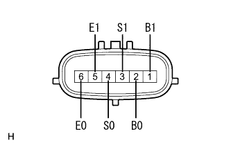

Ultrasonic Sensor NO.1 Inspection |
| 1. Ultrasonic Sensor NO.1 |
 |
Resistance Measurement
Using SST (Toyota electrical tester), measure the resistance between the connector terminals.
| Tester Connection (Terminal Name) | Condition | Standard |
|---|---|---|
| 1(B1) - 5(E1) | Always | 10 kΩ or higher |
| 1(B1) - 2(B0) | Always | 10 kΩ or higher |
| 3(S1) - 4(S0) | Always | Below 1 Ω |
| 5(E1) - 6(E0) | Always | Below 1 Ω |